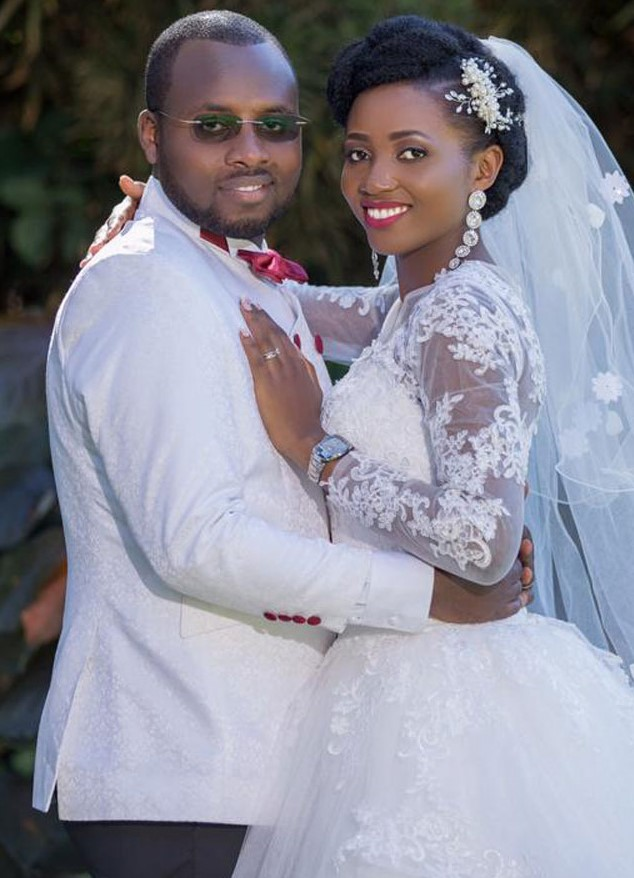
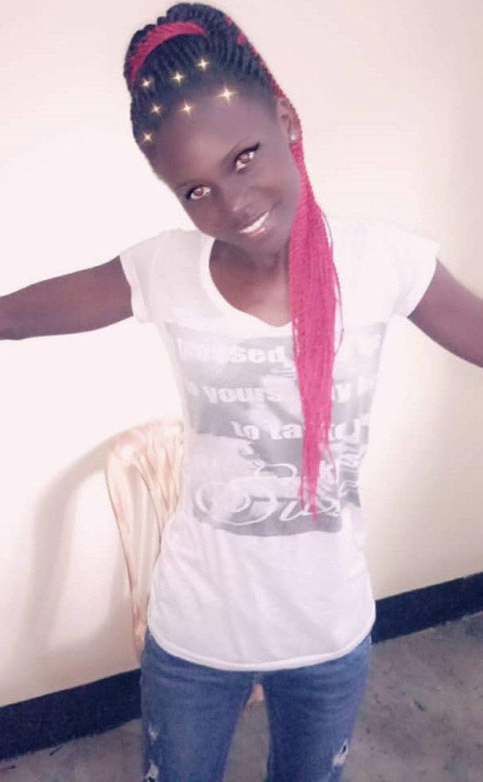
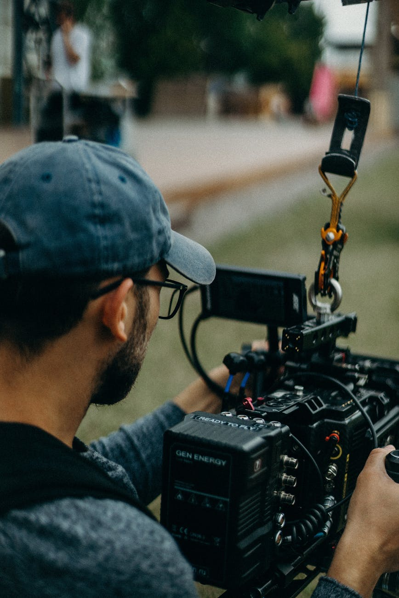
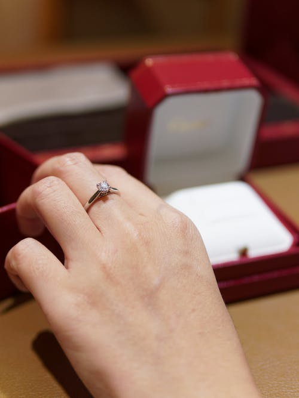

Wedding photography

Great photography makes all the difference.
It has the power to bring people into action.
Compelling shots tell stories without speaking a single word
and most importantly distilling the mayhem and beauty that surrounds us.
We're at Kampala, Uganda photography company that truly stands apart.
Let us show you how we can take your photography to the next level.
We specialise in wedding,birthday,graduation,documentary,corporate
and lifestyle photography in and around Uganda, Rwanda, Kenya, East Africa
In addition to our wedding photography we offer engagement sessions
and photo shoots for couples; a unique
and personal way to mark anniversaries or to give as gifts from one partner to the other.
Our couples’ sessions are popular first anniversary gifts,
especially with the theme of the first wedding anniversary being ‘paper’.
True life Photography

We know that lifestyle photography,
is more than taking candid shots.
It is about capturing images that reveal a story.
We know how to celebrate real life moments in people's life in their day-to-day surroundings.
Our lifestyle photography service is tailored exclusively to each project or product,
creating a personalized representation to suit your needs.
True Lifestyle Photography, is however, more than taking candid shots.
It is about capturing images that reveal a story. A personality. A relationship. A feeling.
We do this because we believe that everyone has a story to tell
and everyone is beautiful in some way.
We use narrative lifestyle photography as a tool to tell those stories
and to create authentic artifacts of who people and families are at a given time.
Video shooting

We utilize our unique cinematic, documentary-style vision in every project,
bringing it to life with evocative visuals, immersive soundscapes
and innovative storytelling.
Be it a project, conference, seminar, workshop, fashion show or Entertainment.
We thrive on taking projects right from the initial brief
all the way through to delivering the final output.
Whether you need filmed interviews our flexible
and creative approach means we provide our clients
with finished products that are exciting, informative,
and often unique. Get in touch with us today for your upcoming event.
Engagement

Engagement ring is an important symbol for rwo people to share.
It is a symbol of their dedication,love,nd commitment to eachother.
A symbol of the beautiful journey that two people embark upon
when they decide to spend their lives together.
Symbol of devotion,fidelity a couple shares
Pictures are taken here to keep this day memorable in your days of life
Others
We offer other services like photo editing,video editing,photo books,documentary etc.
Our work
Our team is professional and very easy to work with.
If the quality of your images matter, you have come to the right place.
Check out some of our work via our email and
social media as indicated below on each page
Shan Digital Studio works with great brands in uganda
and the world at large, and we pride ourselves on break through work that delivers results.
If you’d like to learn more about our work,
feel free to contact us by filling up the contact form.